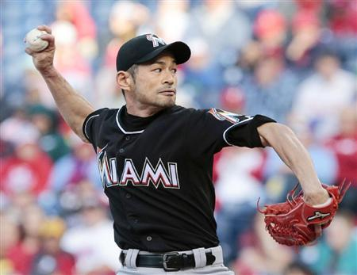
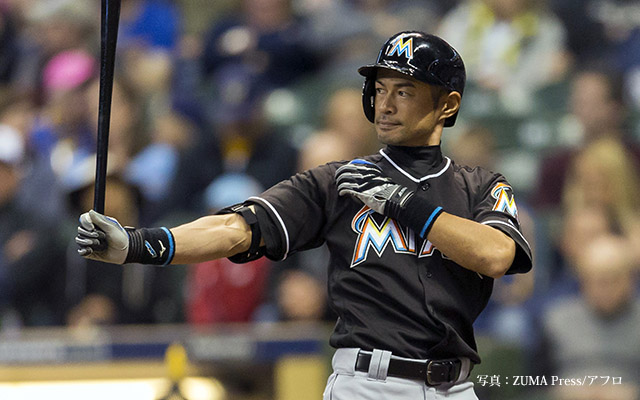

イチロー
イチロー（本名：鈴木 一朗〈すずき いちろう〉、1973年10月22日 - ）は、愛知県西春日井郡豊山町出身のプロ野球選手（外野手）。マイアミ・マーリンズ所属。血液型はB型。
他には「Ichiro」「Ichiro Suzuki」「イチロー・スズキ」などと表記される。
NPB・MLBの双方で多数の記録を保持している。NPBでの首位打者七年連続記録、MLBのシーズン最多安打記録(262本)や10年連続200安打などの記録がある。NPB・MLBにてプレーする日本人選手の中では2016年シーズンに最年長野手になっている[2]。これまで様々な伝説を残しており、メディアや国民に「日本における生きる誇り」「世界のイチロー」と言われることもある（後述）。
妻は元TBSアナウンサー・福島弓子。妻の姉はアナウンサー・福島敦子。代理人は初めトニー・アタナシオが長く務め、現在はジョン・ボッグス[3]。
マイアミのイチロー
投手

８月終わりのこと。米大リーグのあるチーム関係者が、マーリンズのダン・ジェニングス監督のところへ歩み寄って、スマートフォンを差し出した。
「これを見てくれ」
画面に映り込んでいたのは若きイチローの姿だ。当時、22歳。ジェニングス監督は「イチローが投げていた」と笑みを浮かべる。
「しかも、結構いい球を」
■ジェニングス監督から「投げられるか」
1996年７月、イチローは東京ドームで行われたオールスターゲームの第２戦で登板したが、そのときの映像が今年、一部の米メディアで話題となり、やがて米球界全体に広まった。それがジェニングス監督のところまで届いたというわけだ。
その後、ジェニングス監督はニンマリして、イチローに声を掛けている。
「投げられるか？」
そのときのことをイチローがこう振り返った。
「監督からはちょっと前に言われてたんですよ。状況によっては、そういうこともあるかもと」
“状況”とは、延長戦で投手を使い果たしてしまったり、大差がついて試合が決まり、負けているチームがそれ以上リリーフ投手を使いたくなかったりするような場面だが、「なかなかそういうシチュエーションがなくて」とイチロー。実際、そのままシーズンが終わるかと思われたが、10月４日の最終戦、七回に差が開き、おあつらえ向きの展開となった。
「今日は最後だし、４点ビハインドでしたから」
声を掛けたのは、イチローの方だという。ジェニングス監督によれば、八回表、先頭打者のイチローが、ネクストバッターズサークルで打席に入る準備をしているときに、話しかけてきたそうだ。
“You thinking about it?”
意訳すれば「この裏から、僕に登板させることが頭にありますか？」ということだが、監督はといえば、きょとんとしていたようだ。
「びっくりしてましたよ」とイチロー。「監督は自分でそうはいったものの、という感じだったんじゃないですかね」
ただ、監督の決断は早かった。
「行ってこい」
3000足踏み

マーリンズのイチロー外野手（４２）は３０日（日本時間３１日）、カージナルス戦に６回の右翼守備から出場し、２打数無安打。メジャー３０００安打到達は持ち越された。
あり得ない光景だった。４回１死一塁、打席には地元の看板打者の４番スタントン。ここで、マーリンズベンチがある三塁側スタンドを中心に「イチローコール」がわき起こった。直前の３番イエリチの適時打で８―０に。歴史的快挙を目の前で見たいファンが過熱して「もうスタントンを休ませてイチローを出してくれ」と望み、生まれたコールだった。
イチローは結局、６回にスタントンに代わり右翼守備から出場。２万５０１１人の観衆に、この日一番の歓声で歓迎された。しかし、その歓声を沈黙に変えたのは、０３年のメジャーデビューから８球団を渡り歩き、故障明けの今季はこの試合が初登板となった苦労人ウィリアムズだ。「残り２本になっているのは知っていた。その２本を許す投手になりたくなかった。とにかく攻めることを心掛け、作戦通りに投げた」。動く速球とチェンジアップを駆使。イチローは６回は二ゴロ、８回には左飛に倒れた。
米独立リーグや台湾球界も経験した３４歳右腕は、過去にイチローと２３打席対戦し通算打率・２７３。フィリーズ時代の昨季は７打数４安打と打ち込まれ、完全アウエーの大歓声の中でも「もっと大きな歓声の中で投げたこともある。集中して投げた」と胸を張った。